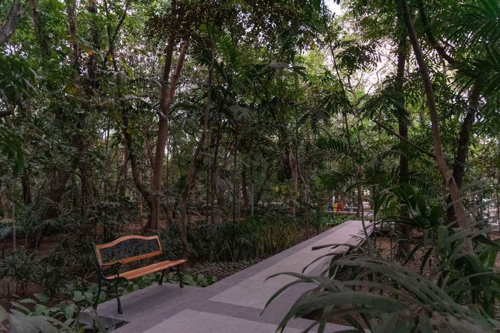

Developed in 1993, the 2.2-hectare (5.4-acre) park on the south bank of the Pasig River, at the foot of Quezon Bridge, consists of secondary growth forest with 61 different tree varieties and 8,000 ornamental plants providing a habitat for 10 different bird species.Despite its small size, it is considered an important feature of the city in providing fresh air to the Lawton area, which is traversed by many commuters from other cities in the region.It lies in a historic area of Manila and has been called "Manila's last lung", being the city's only nature park.
Arroceros Forest Park is a green oasis in the heart of Manila, located along the banks of the Pasig River. Here are some of the things that make Arroceros Forest Park special:
Green Space: Arroceros Forest Park is the last remaining lung of greenery in Manila's downtown area. It provides a much-needed respite from the busy urban environment, offering a peaceful and relaxing atmosphere for visitors.
Biodiversity: Despite its small size, Arroceros Forest Park is home to a wide variety of flora and fauna, including several endangered species. The park serves as an important habitat for birds, butterflies, and other wildlife.
Education: The park offers educational programs and activities that promote environmental awareness and conservation. These programs include guided tours, tree planting, and other eco-friendly initiatives.
Location: Arroceros Forest Park is conveniently located near other major tourist destinations in Manila, such as Intramuros, Rizal Park, and the National Museum Complex.
History: The park has a rich history, dating back to the Spanish colonial era when it was used as a trading center for rice. Today, it serves as a testament to Manila's cultural heritage and a reminder of the importance of green spaces in urban environments.
Overall, Arroceros Forest Park is a hidden gem in Manila that is worth visiting for its biodiversity, educational programs, and historical significance.